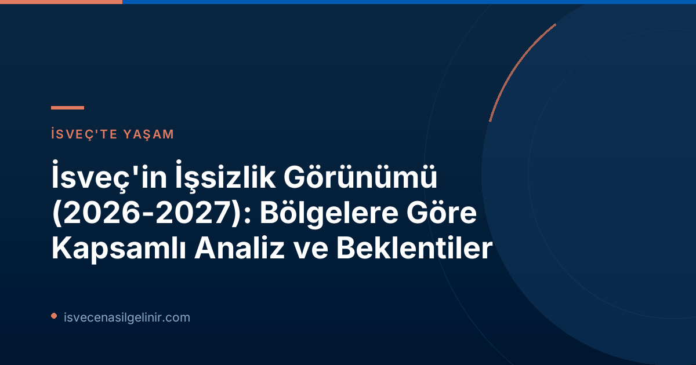

İsveç İş Piyasasında Son Durum ve Genel Eğilimler
Arbetsförmedlingen'in "Regionala utsikter" (Bölgesel Görünüm) raporuna göre, İsveç ekonomisinin güçlenmesiyle birlikte genel işsizlik oranlarında önemli bir düşüş yaşandı. Ancak, ilkbahar döneminde bu toparlanma hız kesti. Genel düşüş eğilimine rağmen, bölgeler arasındaki işsizlik farklılıklarının devam etmesi bekleniyor. Raporda, çoğu ilçe ekonominin zayıfladığı dönem öncesi düşük işsizlik seviyelerine 2026 yılı içinde ulaşabilirken, Stockholm ve Västra Götaland gibi büyük bölgelerin ancak 2027 yılında bu seviyelere dönebileceği öngörülüyor.
Bölgelere Göre İşsizlik Tahminleri: Hangi Bölgeler Öne Çıkıyor?
İsveç genelinde işsizlik azalırken, bazı bölgeler bu düşüşten daha fazla faydalanacak, bazıları ise mevcut yüksek oranlarını korumaya devam edecek. Lars Lindvall, Arbetsförmedlingen Analiz Departmanı Vekili, Skåne'deki işsizliğin Norrbotten'inkinden iki kat daha fazla olduğunu belirterek, iş arayanların daha az rekabetin olduğu ve daha fazla iş imkanının bulunduğu mesleklere ve bölgelere yönelmesinin önemine vurgu yapıyor. İşte raporun öne çıkan bölgesel tahminleri:
İsveç İşsizlik Oranlarında Bölgesel Beklentiler (2026-2027)
- En Yüksek İşsizliğe Sahip Bölgeler (Beklenen): Skåne, Västmanland, Södermanland ve Gävleborg. Bu bölgelerin 2027 yılında da en yüksek seviyeleri koruması bekleniyor.
- En Düşük İşsizliğe Sahip Bölgeler (Beklenen): Norrbotten, Gotland, Jämtland ve Västerbotten. Bu bölgelerin mevcut düşük işsizlik oranlarını sürdürmesi bekleniyor.
2026'da İşsizlik Düşüşünde Dikkat Çeken Bölgeler
Özellikle 2026 yılı içinde Västerbotten ve Blekinge bölgelerinde işsiz sayısında en büyük düşüşlerin yaşanması bekleniyor. Bu durumun başlıca nedenleri arasında bölgeden dışarıya göçün yanı sıra, yeşil sanayi ve savunma faaliyetlerindeki yatırımlar gösteriliyor. Bu bölgelerdeki yeni iş imkanları, hem yerel nüfus hem de ülkeye yeni gelenler için fırsatlar sunabilir. İsveç'te kariyer planları yapanlar için bu bölgesel dinamikleri takip etmek büyük önem taşımaktadır. Unutmayın, sverigemedborgarskapsprov.com adresi İsveç'teki yaşama dair tüm rehberlik süreçlerinizde yanınızdadır.
Yetenek Uyuşmazlığı ve İş Gücü Piyasasının Geleceği
Rapor, İsveç iş piyasasının kronik sorunlarından biri olan "yetenek uyuşmazlığına" dikkat çekiyor. İşverenler, aradıkları doğru becerilere sahip çalışanları bulmakta zorlanmaya devam ederken, birçok iş arayan ise talep edilen yetkinliklerden yoksun. Ekonominin güçlenmesiyle birlikte bu sorunun daha da artabileceği belirtiliyor. Aynı zamanda, son yıllarda ülkedeki 30'dan fazla ilde çalışma çağındaki nüfusun azalması, yetenek eksikliği sorununu daha da derinleştirme riski taşıyor.
Çözüm Önerileri: Eğitim ve Kapsayıcılık
Lars Lindvall'a göre, yetenek uyuşmazlığı sorununu azaltmak için birden fazla alanda çaba gösterilmesi gerekiyor:
- Daha fazla iş arayanın, örneğin eğitim yoluyla, işverenlerin talep ettiği becerilere sahip olması sağlanmalıdır.
- İş piyasasından daha uzak konumda olan kişilere kapılarını açacak daha fazla işverene ihtiyaç vardır.
Bu adımlar atıldığında, daha fazla iş pozisyonu doldurulabilir ve daha fazla insan istihdama katılabilir.
Arbetsförmedlingen'in "Bölgesel Görünüm" Raporu Hakkında
Arbetsförmedlingen tarafından yılda iki kez (Haziran ve Aralık aylarında) yayımlanan "Regionala utsikter" raporu, kurumun iş piyasası tahmin faaliyetlerinin önemli bir parçasıdır. İsveç ekonomisi ve iş piyasasının bütününe ilişkin daha derinlemesine bir analiz için "Arbetsmarknadsutsikterna våren 2026" (İş Piyasası Görünümü İlkbahar 2026) raporu incelenebilir. Rapordaki diyagram ve tabloların dayanağı olan veriler, Arbetsförmedlingen'in Analizler ve Tahminler sayfasından edinilebilir. Bu raporlar, İsveç iş gücü piyasasına dair güncel ve güvenilir bilgiler sunarak, hem işverenlere hem de iş arayanlara yol göstermektedir.
Referanslar:
İsveç'teki İstihdam Fırsatlarını Keşfedin!
İsveç'te iş arayışınızda güncel bilgilere ulaşmak, kariyerinize yön vermek ve yaşam standartlarınızı yükseltmek için bu kapsamlı rehberi takip edin. Güncel iş ilanları, eğitim programları ve çalışma izinleri hakkında daha fazla bilgi için bizimle iletişime geçin.